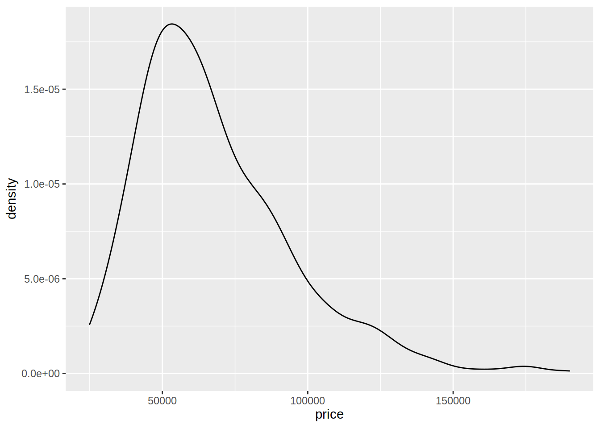

Chapter 6 Statistical models
In this chapter, we will not learn about all the models out there that you may or may not need. Instead, I will show you how can use what you have learned until now and how you can apply these concepts to modeling. Also, as you read in the beginning of the book, R has many many packages. So the model you need is most probably already implemented in some package and you will very likely not need to write your own from scratch.
In the first section, I will discuss the terminology used in this book. Then I will discuss linear regression; showing how linear regression works illsutrates very well how other models work too, without loss of generality. Then I will introduce the concepte of hyper-parameters with ridge regression. This chapter will then finish with an introduction to cross-validation as a way to tune the hyper-parameters of models that features them.
6.1 Terminology
Before continuing discussing about statistical models and model fitting it is worthwhile to discuss
terminology a little bit. Depending on your background, you might call an explanatory variable a
feature or the dependent variable the target. These are the same objects. The matrix of features
is usually called a design matrix, and what statisticians call the intercept is what
machine learning engineers call the bias. Referring to the intercept by bias is unfortunate, as bias
also has a very different meaning; bias is also what we call the error in a model that may cause
biased estimates. To finish up, the estimated parameters of the model may be called coefficients
or weights. Here again, I don’t like the using weight as weight as a very different meaning in
statistics.
So, in the remainder of this chapter, and book, I will use the terminology from the statistical
litterature, using dependent and explanatory variables (y and x), and calling the
estimated parameters coefficients and the intercept… well the intercept (the \(\beta\)s of the model).
However, I will talk of training a model, instead of estimating a model.
6.2 Fitting a model to data
Suppose you have a variable y that you wish to explain using a set of other variables x1, x2,
x3, etc. Let’s take a look at the Housing dataset from the Ecdat package:
library(Ecdat)
data(Housing)You can read a description of the dataset by running:
?HousingHousing package:Ecdat R Documentation
Sales Prices of Houses in the City of Windsor
Description:
a cross-section from 1987
_number of observations_ : 546
_observation_ : goods
_country_ : Canada
Usage:
data(Housing)
Format:
A dataframe containing :
price: sale price of a house
lotsize: the lot size of a property in square feet
bedrooms: number of bedrooms
bathrms: number of full bathrooms
stories: number of stories excluding basement
driveway: does the house has a driveway ?
recroom: does the house has a recreational room ?
fullbase: does the house has a full finished basement ?
gashw: does the house uses gas for hot water heating ?
airco: does the house has central air conditioning ?
garagepl: number of garage places
prefarea: is the house located in the preferred neighbourhood of the city ?
Source:
Anglin, P.M. and R. Gencay (1996) “Semiparametric estimation of
a hedonic price function”, _Journal of Applied Econometrics_,
*11(6)*, 633-648.
References:
Verbeek, Marno (2004) _A Guide to Modern Econometrics_, John Wiley
and Sons, chapter 3.
Journal of Applied Econometrics data archive : <URL:
http://qed.econ.queensu.ca/jae/>.
See Also:
‘Index.Source’, ‘Index.Economics’, ‘Index.Econometrics’,
‘Index.Observations’or by looking for Housing in the help pane of RStudio. Usually, you would take a look a the data
before doing any modeling:
glimpse(Housing)## Rows: 546
## Columns: 12
## $ price <dbl> 42000, 38500, 49500, 60500, 61000, 66000, 66000, 69000, 83800…
## $ lotsize <dbl> 5850, 4000, 3060, 6650, 6360, 4160, 3880, 4160, 4800, 5500, 7…
## $ bedrooms <dbl> 3, 2, 3, 3, 2, 3, 3, 3, 3, 3, 3, 2, 3, 3, 2, 2, 3, 4, 1, 2, 3…
## $ bathrms <dbl> 1, 1, 1, 1, 1, 1, 2, 1, 1, 2, 2, 1, 1, 1, 1, 1, 1, 1, 1, 2, 1…
## $ stories <dbl> 2, 1, 1, 2, 1, 1, 2, 3, 1, 4, 1, 1, 2, 1, 1, 1, 2, 3, 1, 1, 2…
## $ driveway <fct> yes, yes, yes, yes, yes, yes, yes, yes, yes, yes, yes, no, ye…
## $ recroom <fct> no, no, no, yes, no, yes, no, no, yes, yes, no, no, no, no, n…
## $ fullbase <fct> yes, no, no, no, no, yes, yes, no, yes, no, yes, no, no, no, …
## $ gashw <fct> no, no, no, no, no, no, no, no, no, no, no, no, no, no, no, n…
## $ airco <fct> no, no, no, no, no, yes, no, no, no, yes, yes, no, no, no, no…
## $ garagepl <dbl> 1, 0, 0, 0, 0, 0, 2, 0, 0, 1, 3, 0, 0, 0, 0, 0, 1, 0, 0, 1, 1…
## $ prefarea <fct> no, no, no, no, no, no, no, no, no, no, no, no, no, no, no, n…Housing prices depend on a set of variables such as the number of bedrooms, the area it is located
and so on. If you believe that housing prices depend linearly on a set of explanatory variables,
you will want to estimate a linear model. To estimate a linear model, you will need to use the
built-in lm() function:
model1 <- lm(price ~ lotsize + bedrooms, data = Housing)lm() takes a formula as an argument, which defines the model you want to estimate. In this case,
I ran the following regression:
\[ \text{price} = \beta_0 + \beta_1 * \text{lotsize} + \beta_2 * \text{bedrooms} + \varepsilon \]
where \(\beta_0, \beta_1\) and \(\beta_2\) are three parameters to estimate. To take a look at the
results, you can use the summary() method (not to be confused with dplyr::summarise()):
summary(model1)##
## Call:
## lm(formula = price ~ lotsize + bedrooms, data = Housing)
##
## Residuals:
## Min 1Q Median 3Q Max
## -65665 -12498 -2075 8970 97205
##
## Coefficients:
## Estimate Std. Error t value Pr(>|t|)
## (Intercept) 5.613e+03 4.103e+03 1.368 0.172
## lotsize 6.053e+00 4.243e-01 14.265 < 2e-16 ***
## bedrooms 1.057e+04 1.248e+03 8.470 2.31e-16 ***
## ---
## Signif. codes: 0 '***' 0.001 '**' 0.01 '*' 0.05 '.' 0.1 ' ' 1
##
## Residual standard error: 21230 on 543 degrees of freedom
## Multiple R-squared: 0.3703, Adjusted R-squared: 0.3679
## F-statistic: 159.6 on 2 and 543 DF, p-value: < 2.2e-16if you wish to remove the intercept (\(\beta_0\) in the above equation) from your model, you can
do so with -1:
model2 <- lm(price ~ -1 + lotsize + bedrooms, data = Housing)
summary(model2)##
## Call:
## lm(formula = price ~ -1 + lotsize + bedrooms, data = Housing)
##
## Residuals:
## Min 1Q Median 3Q Max
## -67229 -12342 -1333 9627 95509
##
## Coefficients:
## Estimate Std. Error t value Pr(>|t|)
## lotsize 6.283 0.390 16.11 <2e-16 ***
## bedrooms 11968.362 713.194 16.78 <2e-16 ***
## ---
## Signif. codes: 0 '***' 0.001 '**' 0.01 '*' 0.05 '.' 0.1 ' ' 1
##
## Residual standard error: 21250 on 544 degrees of freedom
## Multiple R-squared: 0.916, Adjusted R-squared: 0.9157
## F-statistic: 2965 on 2 and 544 DF, p-value: < 2.2e-16or if you want to use all the columns inside Housing, replacing the column names by .:
model3 <- lm(price ~ ., data = Housing)
summary(model3)##
## Call:
## lm(formula = price ~ ., data = Housing)
##
## Residuals:
## Min 1Q Median 3Q Max
## -41389 -9307 -591 7353 74875
##
## Coefficients:
## Estimate Std. Error t value Pr(>|t|)
## (Intercept) -4038.3504 3409.4713 -1.184 0.236762
## lotsize 3.5463 0.3503 10.124 < 2e-16 ***
## bedrooms 1832.0035 1047.0002 1.750 0.080733 .
## bathrms 14335.5585 1489.9209 9.622 < 2e-16 ***
## stories 6556.9457 925.2899 7.086 4.37e-12 ***
## drivewayyes 6687.7789 2045.2458 3.270 0.001145 **
## recroomyes 4511.2838 1899.9577 2.374 0.017929 *
## fullbaseyes 5452.3855 1588.0239 3.433 0.000642 ***
## gashwyes 12831.4063 3217.5971 3.988 7.60e-05 ***
## aircoyes 12632.8904 1555.0211 8.124 3.15e-15 ***
## garagepl 4244.8290 840.5442 5.050 6.07e-07 ***
## prefareayes 9369.5132 1669.0907 5.614 3.19e-08 ***
## ---
## Signif. codes: 0 '***' 0.001 '**' 0.01 '*' 0.05 '.' 0.1 ' ' 1
##
## Residual standard error: 15420 on 534 degrees of freedom
## Multiple R-squared: 0.6731, Adjusted R-squared: 0.6664
## F-statistic: 99.97 on 11 and 534 DF, p-value: < 2.2e-16You can access different elements of model3 with $, because the result of lm() is a list
(you can check this claim with typeof(model3):
print(model3$coefficients)## (Intercept) lotsize bedrooms bathrms stories drivewayyes
## -4038.350425 3.546303 1832.003466 14335.558468 6556.945711 6687.778890
## recroomyes fullbaseyes gashwyes aircoyes garagepl prefareayes
## 4511.283826 5452.385539 12831.406266 12632.890405 4244.829004 9369.513239but I prefer to use the {broom} package, and more specifically the tidy() function, which
converts model3 into a neat data.frame:
results3 <- broom::tidy(model3)
glimpse(results3)## Rows: 12
## Columns: 5
## $ term <chr> "(Intercept)", "lotsize", "bedrooms", "bathrms", "stories", …
## $ estimate <dbl> -4038.350425, 3.546303, 1832.003466, 14335.558468, 6556.9457…
## $ std.error <dbl> 3409.4713, 0.3503, 1047.0002, 1489.9209, 925.2899, 2045.2458…
## $ statistic <dbl> -1.184451, 10.123618, 1.749764, 9.621691, 7.086369, 3.269914…
## $ p.value <dbl> 2.367616e-01, 3.732442e-22, 8.073341e-02, 2.570369e-20, 4.37…I explicitely write broom::tidy() because tidy() is a popular function name. For instance,
it is also a function from the {yardstick} package, which does not do the same thing at all. Since
I will also be using {yardstick} I prefer to explicitely write broom::tidy() to avoid conflicts.
Using broom::tidy() is useful, because you can then work on the results easily, for example if
you wish to only keep results that are significant at the 5% level:
results3 %>%
filter(p.value < 0.05)## # A tibble: 10 × 5
## term estimate std.error statistic p.value
## <chr> <dbl> <dbl> <dbl> <dbl>
## 1 lotsize 3.55 0.350 10.1 3.73e-22
## 2 bathrms 14336. 1490. 9.62 2.57e-20
## 3 stories 6557. 925. 7.09 4.37e-12
## 4 drivewayyes 6688. 2045. 3.27 1.15e- 3
## 5 recroomyes 4511. 1900. 2.37 1.79e- 2
## 6 fullbaseyes 5452. 1588. 3.43 6.42e- 4
## 7 gashwyes 12831. 3218. 3.99 7.60e- 5
## 8 aircoyes 12633. 1555. 8.12 3.15e-15
## 9 garagepl 4245. 841. 5.05 6.07e- 7
## 10 prefareayes 9370. 1669. 5.61 3.19e- 8You can even add new columns, such as the confidence intervals:
results3 <- broom::tidy(model3, conf.int = TRUE, conf.level = 0.95)
print(results3)## # A tibble: 12 × 7
## term estimate std.error statistic p.value conf.low conf.high
## <chr> <dbl> <dbl> <dbl> <dbl> <dbl> <dbl>
## 1 (Intercept) -4038. 3409. -1.18 2.37e- 1 -10736. 2659.
## 2 lotsize 3.55 0.350 10.1 3.73e-22 2.86 4.23
## 3 bedrooms 1832. 1047. 1.75 8.07e- 2 -225. 3889.
## 4 bathrms 14336. 1490. 9.62 2.57e-20 11409. 17262.
## 5 stories 6557. 925. 7.09 4.37e-12 4739. 8375.
## 6 drivewayyes 6688. 2045. 3.27 1.15e- 3 2670. 10705.
## 7 recroomyes 4511. 1900. 2.37 1.79e- 2 779. 8244.
## 8 fullbaseyes 5452. 1588. 3.43 6.42e- 4 2333. 8572.
## 9 gashwyes 12831. 3218. 3.99 7.60e- 5 6511. 19152.
## 10 aircoyes 12633. 1555. 8.12 3.15e-15 9578. 15688.
## 11 garagepl 4245. 841. 5.05 6.07e- 7 2594. 5896.
## 12 prefareayes 9370. 1669. 5.61 3.19e- 8 6091. 12648.Going back to model estimation, you can of course use lm() in a pipe workflow:
Housing %>%
select(-driveway, -stories) %>%
lm(price ~ ., data = .) %>%
broom::tidy()## # A tibble: 10 × 5
## term estimate std.error statistic p.value
## <chr> <dbl> <dbl> <dbl> <dbl>
## 1 (Intercept) 3025. 3263. 0.927 3.54e- 1
## 2 lotsize 3.67 0.363 10.1 4.52e-22
## 3 bedrooms 4140. 1036. 3.99 7.38e- 5
## 4 bathrms 16443. 1546. 10.6 4.29e-24
## 5 recroomyes 5660. 2010. 2.82 5.05e- 3
## 6 fullbaseyes 2241. 1618. 1.38 1.67e- 1
## 7 gashwyes 13568. 3411. 3.98 7.93e- 5
## 8 aircoyes 15578. 1597. 9.75 8.53e-21
## 9 garagepl 4232. 883. 4.79 2.12e- 6
## 10 prefareayes 10729. 1753. 6.12 1.81e- 9The first . in the lm() function is used to indicate that we wish to use all the data from Housing
(minus driveway and stories which I removed using select() and the - sign), and the second . is
used to place the result from the two dplyr instructions that preceded is to be placed there.
The picture below should help you understand:

You have to specify this, because by default, when using %>% the left hand side argument gets
passed as the first argument of the function on the right hand side.
Since version 4.2, R now also natively includes a placeholder, _:
Housing |>
select(-driveway, -stories) |>
lm(price ~ ., data = _) |>
broom::tidy()## # A tibble: 10 × 5
## term estimate std.error statistic p.value
## <chr> <dbl> <dbl> <dbl> <dbl>
## 1 (Intercept) 3025. 3263. 0.927 3.54e- 1
## 2 lotsize 3.67 0.363 10.1 4.52e-22
## 3 bedrooms 4140. 1036. 3.99 7.38e- 5
## 4 bathrms 16443. 1546. 10.6 4.29e-24
## 5 recroomyes 5660. 2010. 2.82 5.05e- 3
## 6 fullbaseyes 2241. 1618. 1.38 1.67e- 1
## 7 gashwyes 13568. 3411. 3.98 7.93e- 5
## 8 aircoyes 15578. 1597. 9.75 8.53e-21
## 9 garagepl 4232. 883. 4.79 2.12e- 6
## 10 prefareayes 10729. 1753. 6.12 1.81e- 9For the example above, I’ve also switched from %>% to |>, or else I can’t use the _ placeholder.
The advantage of the _ placeholder is that it disambiguates .. So here, the . is a placeholder for
all the variables in the dataset, and _ is a placeholder for the dataset.
6.3 Diagnostics
Diagnostics are useful metrics to assess model fit. You can read some of these diagnostics, such as
the \(R^2\) at the bottom of the summary (when running summary(my_model)), but if you want to do
more than simply reading these diagnostics from RStudio, you can put those in a data.frame too,
using broom::glance():
glance(model3)## # A tibble: 1 × 12
## r.squared adj.r.squared sigma statistic p.value df logLik AIC BIC
## <dbl> <dbl> <dbl> <dbl> <dbl> <dbl> <dbl> <dbl> <dbl>
## 1 0.673 0.666 15423. 100. 6.18e-122 11 -6034. 12094. 12150.
## # … with 3 more variables: deviance <dbl>, df.residual <int>, nobs <int>You can also plot the usual diagnostics plots using ggfortify::autoplot() which uses the
{ggplot2} package under the hood:
library(ggfortify)
autoplot(model3, which = 1:6) + theme_minimal()
which=1:6 is an additional option that shows you all the diagnostics plot. If you omit this
option, you will only get 4 of them.
You can also get the residuals of the regression in two ways; either you grab them directly from the model fit:
resi3 <- residuals(model3)or you can augment the original data with a residuals column, using broom::augment():
housing_aug <- augment(model3)Let’s take a look at housing_aug:
glimpse(housing_aug)## Rows: 546
## Columns: 18
## $ price <dbl> 42000, 38500, 49500, 60500, 61000, 66000, 66000, 69000, 838…
## $ lotsize <dbl> 5850, 4000, 3060, 6650, 6360, 4160, 3880, 4160, 4800, 5500,…
## $ bedrooms <dbl> 3, 2, 3, 3, 2, 3, 3, 3, 3, 3, 3, 2, 3, 3, 2, 2, 3, 4, 1, 2,…
## $ bathrms <dbl> 1, 1, 1, 1, 1, 1, 2, 1, 1, 2, 2, 1, 1, 1, 1, 1, 1, 1, 1, 2,…
## $ stories <dbl> 2, 1, 1, 2, 1, 1, 2, 3, 1, 4, 1, 1, 2, 1, 1, 1, 2, 3, 1, 1,…
## $ driveway <fct> yes, yes, yes, yes, yes, yes, yes, yes, yes, yes, yes, no, …
## $ recroom <fct> no, no, no, yes, no, yes, no, no, yes, yes, no, no, no, no,…
## $ fullbase <fct> yes, no, no, no, no, yes, yes, no, yes, no, yes, no, no, no…
## $ gashw <fct> no, no, no, no, no, no, no, no, no, no, no, no, no, no, no,…
## $ airco <fct> no, no, no, no, no, yes, no, no, no, yes, yes, no, no, no, …
## $ garagepl <dbl> 1, 0, 0, 0, 0, 0, 2, 0, 0, 1, 3, 0, 0, 0, 0, 0, 1, 0, 0, 1,…
## $ prefarea <fct> no, no, no, no, no, no, no, no, no, no, no, no, no, no, no,…
## $ .fitted <dbl> 66037.98, 41391.15, 39889.63, 63689.09, 49760.43, 66387.12,…
## $ .resid <dbl> -24037.9757, -2891.1515, 9610.3699, -3189.0873, 11239.5735,…
## $ .hat <dbl> 0.013477335, 0.008316321, 0.009893730, 0.021510891, 0.01033…
## $ .sigma <dbl> 15402.01, 15437.14, 15431.98, 15437.02, 15429.89, 15437.64,…
## $ .cooksd <dbl> 2.803214e-03, 2.476265e-05, 3.265481e-04, 8.004787e-05, 4.6…
## $ .std.resid <dbl> -1.56917096, -0.18823924, 0.62621736, -0.20903274, 0.732539…A few columns have been added to the original data, among them .resid which contains the
residuals. Let’s plot them:
ggplot(housing_aug) +
geom_density(aes(.resid))
Fitted values are also added to the original data, under the variable .fitted. It would also have
been possible to get the fitted values with:
fit3 <- fitted(model3)but I prefer using augment(), because the columns get merged to the original data, which then
makes it easier to find specific individuals, for example, you might want to know for which housing
units the model underestimates the price:
total_pos <- housing_aug %>%
filter(.resid > 0) %>%
summarise(total = n()) %>%
pull(total)we find 261 individuals where the residuals are positive. It is also easier to extract outliers:
housing_aug %>%
mutate(prank = cume_dist(.cooksd)) %>%
filter(prank > 0.99) %>%
glimpse()## Rows: 6
## Columns: 19
## $ price <dbl> 163000, 125000, 132000, 175000, 190000, 174500
## $ lotsize <dbl> 7420, 4320, 3500, 9960, 7420, 7500
## $ bedrooms <dbl> 4, 3, 4, 3, 4, 4
## $ bathrms <dbl> 1, 1, 2, 2, 2, 2
## $ stories <dbl> 2, 2, 2, 2, 3, 2
## $ driveway <fct> yes, yes, yes, yes, yes, yes
## $ recroom <fct> yes, no, no, no, no, no
## $ fullbase <fct> yes, yes, no, yes, no, yes
## $ gashw <fct> no, yes, yes, no, no, no
## $ airco <fct> yes, no, no, no, yes, yes
## $ garagepl <dbl> 2, 2, 2, 2, 2, 3
## $ prefarea <fct> no, no, no, yes, yes, yes
## $ .fitted <dbl> 94826.68, 77688.37, 85495.58, 108563.18, 115125.03, 118549.…
## $ .resid <dbl> 68173.32, 47311.63, 46504.42, 66436.82, 74874.97, 55951.00
## $ .hat <dbl> 0.02671105, 0.05303793, 0.05282929, 0.02819317, 0.02008141,…
## $ .sigma <dbl> 15144.70, 15293.34, 15298.27, 15159.14, 15085.99, 15240.66
## $ .cooksd <dbl> 0.04590995, 0.04637969, 0.04461464, 0.04616068, 0.04107317,…
## $ .std.resid <dbl> 4.480428, 3.152300, 3.098176, 4.369631, 4.904193, 3.679815
## $ prank <dbl> 0.9963370, 1.0000000, 0.9945055, 0.9981685, 0.9926740, 0.99…prank is a variable I created with cume_dist() which is a dplyr function that returns the
proportion of all values less than or equal to the current rank. For example:
example <- c(5, 4.6, 2, 1, 0.8, 0, -1)
cume_dist(example)## [1] 1.0000000 0.8571429 0.7142857 0.5714286 0.4285714 0.2857143 0.1428571by filtering prank > 0.99 we get the top 1% of outliers according to Cook’s distance.
6.4 Interpreting models
Model interpretation is essential in the social sciences, but it is also getting very important in machine learning. As usual, the terminology is different; in machine learning, we speak about explainability. There is a very important aspect that one has to understand when it comes to interpretability/explainability: classical, parametric models, and black-box models. This is very well explained in Breiman (2001), an absolute must read (link to paper, in PDF format: click here). The gist of the paper is that there are two cultures of statistical modeling; one culture relies on modeling the data generating process, for instance, by considering that a variable y (independent variable, or target) is a linear combination of input variables x (dependent variables, or features) plus some noise. The other culture uses complex algorithms (random forests, neural networks) to model the relationship between y and x. The author argues that most statisticians have relied for too long on modeling data generating processes and do not use all the potential offered by these complex algorithms. I think that a lot of things have changed since then, and that nowadays any practitioner that uses data is open to use any type of model or algorithm, as long as it does the job. However, the paper is very interesting, and the discussion on trade-off between simplicity of the model and interpretability/explainability is still relevant today.
In this section, I will explain how one can go about interpreting or explaining models from these two cultures.
Also, it is important to note here that the discussion that will follow will be heavily influenced by my econometrics background. I will focus on marginal effects as way to interpret parametric models (models from the first culture described above), but depending on the field, practitioners might use something else (for instance by computing odds ratios in a logistic regression).
I will start by interpretability of classical statistical models.
6.4.1 Marginal effects
If one wants to know the effect of variable x on the dependent variable y,
so-called marginal effects have to be computed. This is easily done in R with the {marginaleffects} package.
Formally, marginal effects are the partial derivative of the regression equation with respect to the variable
we want to look at.
library(marginaleffects)
effects_model3 <- marginaleffects(model3)
summary(effects_model3)## Average marginal effects
## Term Contrast Effect Std. Error z value Pr(>|z|) 2.5 % 97.5 %
## 1 lotsize dY/dX 3.546 0.3846 9.220 < 2.22e-16 2.792 4.3
## 2 bedrooms dY/dX 1832.003 1047.1308 1.750 0.08019668 -220.335 3884.3
## 3 bathrms dY/dX 14335.558 1489.8472 9.622 < 2.22e-16 11415.512 17255.6
## 4 stories dY/dX 6556.946 925.3293 7.086 1.3798e-12 4743.334 8370.6
## 5 driveway yes - no 6687.779 2045.2459 3.270 0.00107580 2679.171 10696.4
## 6 recroom yes - no 4511.284 1899.9577 2.374 0.01757689 787.435 8235.1
## 7 fullbase yes - no 5452.386 1588.0239 3.433 0.00059597 2339.916 8564.9
## 8 gashw yes - no 12831.406 3217.5970 3.988 6.6665e-05 6525.032 19137.8
## 9 airco yes - no 12632.890 1555.0211 8.124 4.4409e-16 9585.105 15680.7
## 10 garagepl dY/dX 4244.829 840.8294 5.048 4.4556e-07 2596.834 5892.8
## 11 prefarea yes - no 9369.513 1669.0906 5.614 1.9822e-08 6098.156 12640.9
##
## Model type: lm
## Prediction type: responseLet’s go through this: summary(effects_model3) shows the average marginal effects for each of the dependent
variables that were used in model3. The way to interpret them is as follows:
everything else held constant (often you’ll read the Latin ceteris paribus for this), a unit increase in
lotize increases the price by 3.546 units, on average.
The everything held constant part is crucial; with marginal effects, you’re looking at just the effect of
one variable at a time. For discrete variables, like driveway, this is simpler: imagine you have two
equal houses, exactly the same house, one has a driveway and the other doesn’t. The one with the driveway
is 6687 units more expensive, on average.
Now it turns out that in the case of a linear model, the average marginal effects are exactly equal to the
coefficients. Just compare summary(model3) to effects_model3 to see
(and remember, I told you that marginal effects were the partial derivative of the regression equation with
respect to the variable of interest. So the derivative of \(\alpha*X_1 + ....\) with respect to \(X_1\) will
be \(\alpha\)). But in the case of a more complex, non-linear model, this is not so obvious. This is
where {marginaleffects} will make your life much easier.
It is also possible to plot the results:
plot(effects_model3)
effects_model3 is a data frame containing the effects for each house in the data set. For example,
let’s take a look at the first house:
effects_model3 %>%
filter(rowid == 1)## rowid type term contrast dydx std.error statistic
## 1 1 response lotsize dY/dX 3.546303 3.502482 1.012512
## 2 1 response bedrooms dY/dX 1832.003466 1046.703475 1.750260
## 3 1 response bathrms dY/dX 14335.558468 1490.238577 9.619640
## 4 1 response stories dY/dX 6556.945711 926.374131 7.078075
## 5 1 response driveway yes - no 6687.778890 2045.246032 3.269914
## 6 1 response recroom yes - no 4511.283826 1899.957718 2.374413
## 7 1 response fullbase yes - no 5452.385539 1588.023754 3.433441
## 8 1 response gashw yes - no 12831.406266 3217.597193 3.987885
## 9 1 response airco yes - no 12632.890405 1555.020704 8.123937
## 10 1 response garagepl dY/dX 4244.829004 840.856005 5.048223
## 11 1 response prefarea yes - no 9369.513239 1669.090497 5.613544
## p.value conf.low conf.high price lotsize bedrooms bathrms stories
## 1 3.112935e-01 -3.318435 10.41104 42000 5850 3 1 2
## 2 8.007342e-02 -219.497648 3883.50458 42000 5850 3 1 2
## 3 6.606203e-22 11414.744528 17256.37241 42000 5850 3 1 2
## 4 1.461705e-12 4741.285779 8372.60564 42000 5850 3 1 2
## 5 1.075801e-03 2679.170328 10696.38745 42000 5850 3 1 2
## 6 1.757689e-02 787.435126 8235.13253 42000 5850 3 1 2
## 7 5.959723e-04 2339.916175 8564.85490 42000 5850 3 1 2
## 8 6.666508e-05 6525.031651 19137.78088 42000 5850 3 1 2
## 9 4.512997e-16 9585.105829 15680.67498 42000 5850 3 1 2
## 10 4.459374e-07 2596.781519 5892.87649 42000 5850 3 1 2
## 11 1.982240e-08 6098.155978 12640.87050 42000 5850 3 1 2
## driveway recroom fullbase gashw airco garagepl prefarea
## 1 yes no yes no no 1 no
## 2 yes no yes no no 1 no
## 3 yes no yes no no 1 no
## 4 yes no yes no no 1 no
## 5 yes no yes no no 1 no
## 6 yes no yes no no 1 no
## 7 yes no yes no no 1 no
## 8 yes no yes no no 1 no
## 9 yes no yes no no 1 no
## 10 yes no yes no no 1 no
## 11 yes no yes no no 1 norowid is column that identifies the houses in the original data set, so rowid == 1 filters out
the first house. This shows you the marginal effects (column dydx computed for this house; but
remember, since we’re dealing with a linear model, the values of the marginal effects are constant.
If you don’t see the point of this discussion, don’t fret, the next example should make things
clearer.
Let’s estimate a logit model and compute the marginal effects. You might know logit models as
logistic regression. Logit models can be estimated using the glm() function, which stands for
generalized linear models.
As an example, we are going to use the Participation data, also from the {Ecdat} package:
data(Participation)?ParticpationParticipation package:Ecdat R Documentation
Labor Force Participation
Description:
a cross-section
_number of observations_ : 872
_observation_ : individuals
_country_ : Switzerland
Usage:
data(Participation)
Format:
A dataframe containing :
lfp labour force participation ?
lnnlinc the log of nonlabour income
age age in years divided by 10
educ years of formal education
nyc the number of young children (younger than 7)
noc number of older children
foreign foreigner ?
Source:
Gerfin, Michael (1996) “Parametric and semiparametric estimation
of the binary response”, _Journal of Applied Econometrics_,
*11(3)*, 321-340.
References:
Davidson, R. and James G. MacKinnon (2004) _Econometric Theory
and Methods_, New York, Oxford University Press, <URL:
http://www.econ.queensu.ca/ETM/>, chapter 11.
Journal of Applied Econometrics data archive : <URL:
http://qed.econ.queensu.ca/jae/>.
See Also:
‘Index.Source’, ‘Index.Economics’, ‘Index.Econometrics’,
‘Index.Observations’The variable of interest is lfp: whether the individual participates in the labour force or not.
To know which variables are relevant in the decision to participate in the labour force, one could
train a logit model, using glm():
logit_participation <- glm(lfp ~ ., data = Participation, family = "binomial")
broom::tidy(logit_participation)## # A tibble: 7 × 5
## term estimate std.error statistic p.value
## <chr> <dbl> <dbl> <dbl> <dbl>
## 1 (Intercept) 10.4 2.17 4.79 1.69e- 6
## 2 lnnlinc -0.815 0.206 -3.97 7.31e- 5
## 3 age -0.510 0.0905 -5.64 1.72e- 8
## 4 educ 0.0317 0.0290 1.09 2.75e- 1
## 5 nyc -1.33 0.180 -7.39 1.51e-13
## 6 noc -0.0220 0.0738 -0.298 7.66e- 1
## 7 foreignyes 1.31 0.200 6.56 5.38e-11From the results above, one can only interpret the sign of the coefficients. To know how much a
variable influences the labour force participation, one has to use marginaleffects():
effects_logit_participation <- marginaleffects(logit_participation)
summary(effects_logit_participation)## Average marginal effects
## Term Contrast Effect Std. Error z value Pr(>|z|) 2.5 % 97.5 %
## 1 lnnlinc dY/dX -0.169942 0.041511 -4.0939 4.2424e-05 -0.251303 -0.08858
## 2 age dY/dX -0.106408 0.017591 -6.0491 1.4563e-09 -0.140885 -0.07193
## 3 educ dY/dX 0.006616 0.006039 1.0954 0.27335 -0.005222 0.01845
## 4 nyc dY/dX -0.277466 0.033255 -8.3435 < 2.22e-16 -0.342645 -0.21229
## 5 noc dY/dX -0.004584 0.015378 -0.2981 0.76563 -0.034725 0.02556
## 6 foreign yes - no 0.283377 0.039840 7.1129 1.1360e-12 0.205292 0.36146
##
## Model type: glm
## Prediction type: responseAs you can see, the average marginal effects here are not equal to the estimated coefficients of the model. Let’s take a look at the first row of the data:
Participation[1, ]## lfp lnnlinc age educ nyc noc foreign
## 1 no 10.7875 3 8 1 1 noand let’s now look at rowid == 1 in the marginal effects data frame:
effects_logit_participation %>%
filter(rowid == 1)## rowid type term contrast dydx std.error statistic
## 1 1 response lnnlinc dY/dX -0.156674613 0.038528914 -4.0664165
## 2 1 response age dY/dX -0.098100999 0.020124864 -4.8746168
## 3 1 response educ dY/dX 0.006099178 0.005366872 1.1364493
## 4 1 response nyc dY/dX -0.255800770 0.029371313 -8.7092044
## 5 1 response noc dY/dX -0.004226379 0.014167358 -0.2983181
## 6 1 response foreign yes - no 0.305630005 0.045174828 6.7654935
## p.value conf.low conf.high lfp lnnlinc age educ nyc noc foreign
## 1 4.774158e-05 -0.232189897 -0.08115933 no 10.7875 3 8 1 1 no
## 2 1.090199e-06 -0.137545007 -0.05865699 no 10.7875 3 8 1 1 no
## 3 2.557686e-01 -0.004419697 0.01661805 no 10.7875 3 8 1 1 no
## 4 3.060149e-18 -0.313367486 -0.19823405 no 10.7875 3 8 1 1 no
## 5 7.654604e-01 -0.031993891 0.02354113 no 10.7875 3 8 1 1 no
## 6 1.328556e-11 0.217088969 0.39417104 no 10.7875 3 8 1 1 noLet’s focus on the first row, where term is lnnlinc. What we see here is the effect of an infinitesimal
increase in the variable lnnlinc on the participation, for an individual who has the following
characteristics: lnnlinc = 10.7875, age = 3, educ = 8, nyc = 1, noc = 1 and foreign = no, which
are the characteristics of this first individual in our data.
So let’s look at the value of dydx for every individual:
dydx_lnnlinc <- effects_logit_participation %>%
filter(term == "lnnlinc")
head(dydx_lnnlinc)## rowid type term contrast dydx std.error statistic p.value
## 1 1 response lnnlinc dY/dX -0.15667461 0.03852891 -4.066416 4.774158e-05
## 2 2 response lnnlinc dY/dX -0.20014394 0.05124728 -3.905455 9.404818e-05
## 3 3 response lnnlinc dY/dX -0.18494891 0.04320270 -4.280957 1.860912e-05
## 4 4 response lnnlinc dY/dX -0.05377069 0.01586793 -3.388640 7.024012e-04
## 5 5 response lnnlinc dY/dX -0.18710270 0.04503463 -4.154640 3.257997e-05
## 6 6 response lnnlinc dY/dX -0.19586843 0.04782532 -4.095496 4.212648e-05
## conf.low conf.high lfp lnnlinc age educ nyc noc foreign
## 1 -0.23218990 -0.08115933 no 10.78750 3.0 8 1 1 no
## 2 -0.30058675 -0.09970112 yes 10.52425 4.5 8 0 1 no
## 3 -0.26962465 -0.10027317 no 10.96858 4.6 9 0 0 no
## 4 -0.08487125 -0.02267013 no 11.10500 3.1 11 2 0 no
## 5 -0.27536895 -0.09883644 no 11.10847 4.4 12 0 2 no
## 6 -0.28960434 -0.10213252 yes 11.02825 4.2 12 0 1 nodydx_lnnlinc is a data frame with all individual marginal effect for the variable lnnlinc.
What if we compute the mean of this column?
dydx_lnnlinc %>%
summarise(mean(dydx))## mean(dydx)
## 1 -0.1699424Let’s compare this to the average marginal effects:
summary(effects_logit_participation)## Average marginal effects
## Term Contrast Effect Std. Error z value Pr(>|z|) 2.5 % 97.5 %
## 1 lnnlinc dY/dX -0.169942 0.041511 -4.0939 4.2424e-05 -0.251303 -0.08858
## 2 age dY/dX -0.106408 0.017591 -6.0491 1.4563e-09 -0.140885 -0.07193
## 3 educ dY/dX 0.006616 0.006039 1.0954 0.27335 -0.005222 0.01845
## 4 nyc dY/dX -0.277466 0.033255 -8.3435 < 2.22e-16 -0.342645 -0.21229
## 5 noc dY/dX -0.004584 0.015378 -0.2981 0.76563 -0.034725 0.02556
## 6 foreign yes - no 0.283377 0.039840 7.1129 1.1360e-12 0.205292 0.36146
##
## Model type: glm
## Prediction type: responseYep, it’s the same! This is why we speak of average marginal effects. Now that we know why these are called average marginal effects, let’s go back to interpreting them. This time, let’s plot them, because why not:
plot(effects_logit_participation)So an infinitesimal increase, in say, non-labour income (lnnlinc) of 0.001 is associated with a
decrease of the probability of labour force participation by 0.001*17 percentage points.
This is just scratching the surface of interpreting these kinds of models. There are many more
types of effects that you can compute and look at. I highly recommend you read the documentation
of {marginaleffects} which you can find
here. The author
of the package, Vincent Arel-Bundock writes a lot of very helpful documentation for his packages,
so if model interpretation is important for your job, definitely take a look.
6.4.2 Explainability of black-box models
Just read Christoph Molnar’s Interpretable Machine Learning.
Seriously, I cannot add anything meaningful to it. His book is brilliant.
6.5 Comparing models
Consider this section more as an illustration of what is possible with the knowledge you acquired at this point. Imagine that the task at hand is to compare two models. We would like to select the one which has the best fit to the data. Let’s first estimate another model on the same data; prices are only positive, so a linear regression might not be the best model, because the model could predict negative prices. Let’s look at the distribution of prices:
ggplot(Housing) +
geom_density(aes(price))
it looks like modeling the log of price might provide a better fit:
model_log <- lm(log(price) ~ ., data = Housing)
result_log <- broom::tidy(model_log)
print(result_log)## # A tibble: 12 × 5
## term estimate std.error statistic p.value
## <chr> <dbl> <dbl> <dbl> <dbl>
## 1 (Intercept) 10.0 0.0472 212. 0
## 2 lotsize 0.0000506 0.00000485 10.4 2.91e-23
## 3 bedrooms 0.0340 0.0145 2.34 1.94e- 2
## 4 bathrms 0.168 0.0206 8.13 3.10e-15
## 5 stories 0.0923 0.0128 7.20 2.10e-12
## 6 drivewayyes 0.131 0.0283 4.61 5.04e- 6
## 7 recroomyes 0.0735 0.0263 2.79 5.42e- 3
## 8 fullbaseyes 0.0994 0.0220 4.52 7.72e- 6
## 9 gashwyes 0.178 0.0446 4.00 7.22e- 5
## 10 aircoyes 0.178 0.0215 8.26 1.14e-15
## 11 garagepl 0.0508 0.0116 4.36 1.58e- 5
## 12 prefareayes 0.127 0.0231 5.50 6.02e- 8Let’s take a look at the diagnostics:
glance(model_log)## # A tibble: 1 × 12
## r.squared adj.r.squared sigma statistic p.value df logLik AIC BIC
## <dbl> <dbl> <dbl> <dbl> <dbl> <dbl> <dbl> <dbl> <dbl>
## 1 0.677 0.670 0.214 102. 3.67e-123 11 73.9 -122. -65.8
## # … with 3 more variables: deviance <dbl>, df.residual <int>, nobs <int>Let’s compare these to the ones from the previous model:
diag_lm <- glance(model3)
diag_lm <- diag_lm %>%
mutate(model = "lin-lin model")
diag_log <- glance(model_log)
diag_log <- diag_log %>%
mutate(model = "log-lin model")
diagnostics_models <- full_join(diag_lm, diag_log) %>%
select(model, everything()) # put the `model` column first## Joining, by = c("r.squared", "adj.r.squared", "sigma", "statistic", "p.value", "df",
## "logLik", "AIC", "BIC", "deviance", "df.residual", "nobs", "model")print(diagnostics_models)## # A tibble: 2 × 13
## model r.squared adj.r.squared sigma statistic p.value df logLik AIC
## <chr> <dbl> <dbl> <dbl> <dbl> <dbl> <dbl> <dbl> <dbl>
## 1 lin-… 0.673 0.666 1.54e+4 100. 6.18e-122 11 -6034. 12094.
## 2 log-… 0.677 0.670 2.14e-1 102. 3.67e-123 11 73.9 -122.
## # … with 4 more variables: BIC <dbl>, deviance <dbl>, df.residual <int>,
## # nobs <int>I saved the diagnostics in two different data.frame objects using the glance() function and added a
model column to indicate which model the diagnostics come from. Then I merged both datasets using
full_join(), a {dplyr} function. Using this approach, we can easily build a data frame with the
diagnostics of several models and compare them. The model using the logarithm of prices has lower
AIC and BIC (and this higher likelihood), so if you’re worried about selecting the model with the better
fit to the data, you’d go for this model.
6.6 Using a model for prediction
Once you estimated a model, you might want to use it for prediction. This is easily done using the
predict() function that works with most models. Prediction is also useful as a way to test the
accuracy of your model: split your data into a training set (used for training) and a testing
set (used for the pseudo-prediction) and see if your model overfits the data. We are going to see
how to do that in a later section; for now, let’s just get acquainted with predict() and other
functions. I insist, keep in mind that this section is only to get acquainted with these functions.
We are going to explore prediction, overfitting and tuning of models in a later section.
Let’s go back to the models we trained in the previous section, model3 and model_log. Let’s also
take a subsample of data, which we will be using for prediction:
set.seed(1234)
pred_set <- Housing %>%
sample_n(20)In order to always get the same pred_set, I set the random seed first. Let’s take a look at the
data:
print(pred_set)## price lotsize bedrooms bathrms stories driveway recroom fullbase gashw
## 284 45000 6750 2 1 1 yes no no no
## 101 57000 4500 3 2 2 no no yes no
## 400 85000 7231 3 1 2 yes yes yes no
## 98 59900 8250 3 1 1 yes no yes no
## 103 125000 4320 3 1 2 yes no yes yes
## 326 99000 8880 3 2 2 yes no yes no
## 79 55000 3180 2 2 1 yes no yes no
## 270 59000 4632 4 1 2 yes no no no
## 382 112500 6550 3 1 2 yes no yes no
## 184 63900 3510 3 1 2 yes no no no
## 4 60500 6650 3 1 2 yes yes no no
## 212 42000 2700 2 1 1 no no no no
## 195 33000 3180 2 1 1 yes no no no
## 511 70000 4646 3 1 2 yes yes yes no
## 479 88000 5450 4 2 1 yes no yes no
## 510 64000 4040 3 1 2 yes no no no
## 424 62900 2880 3 1 2 yes no no no
## 379 84000 7160 3 1 1 yes no yes no
## 108 58500 3680 3 2 2 yes no no no
## 131 35000 4840 2 1 2 yes no no no
## airco garagepl prefarea
## 284 no 0 no
## 101 yes 0 no
## 400 yes 0 yes
## 98 no 3 no
## 103 no 2 no
## 326 yes 1 no
## 79 no 2 no
## 270 yes 0 no
## 382 yes 0 yes
## 184 no 0 no
## 4 no 0 no
## 212 no 0 no
## 195 no 0 no
## 511 no 2 no
## 479 yes 0 yes
## 510 no 1 no
## 424 no 0 yes
## 379 no 2 yes
## 108 no 0 no
## 131 no 0 noIf we wish to use it for prediction, this is easily done with predict():
predict(model3, pred_set)## 284 101 400 98 103 326 79 270
## 51143.48 77286.31 93204.28 76481.82 77688.37 103751.72 66760.79 66486.26
## 382 184 4 212 195 511 479 510
## 86277.96 48042.41 63689.09 30093.18 38483.18 70524.34 91987.65 54166.78
## 424 379 108 131
## 55177.75 77741.03 62980.84 50926.99This returns a vector of predicted prices. This can then be used to compute the Root Mean Squared Error
for instance. Let’s do it within a tidyverse pipeline:
rmse <- pred_set %>%
mutate(predictions = predict(model3, .)) %>%
summarise(sqrt(sum(predictions - price)**2/n()))The root mean square error of model3 is 3646.0817347.
I also used the n() function which returns the number of observations in a group (or all the
observations, if the data is not grouped). Let’s compare model3 ’s RMSE with the one from
model_log:
rmse2 <- pred_set %>%
mutate(predictions = exp(predict(model_log, .))) %>%
summarise(sqrt(sum(predictions - price)**2/n()))Don’t forget to exponentiate the predictions, remember you’re dealing with a log-linear model! model_log’s
RMSE is 1.2125133^{4} which is lower than model3’s. However, keep in mind that the model was trained
on the whole data, and then the prediction quality was assessed using a subsample of the data the
model was trained on… so actually we can’t really say if model_log’s predictions are very useful.
Of course, this is the same for model3.
In a later section we are going to learn how to do cross validation to avoid this issue.
Just as a side note, notice that I had to copy and paste basically the same lines twice to compute the predictions for both models. That’s not much, but if I wanted to compare 10 models, copy and paste mistakes could have sneaked in. Instead, it would have been nice to have a function that computes the RMSE and then use it on my models. We are going to learn how to write our own functions and use it just like if it was another built-in R function.
6.7 Beyond linear regression
R has a lot of other built-in functions for regression, such as glm() (for Generalized Linear
Models) and nls() for (for Nonlinear Least Squares). There are also functions and additional
packages for time series, panel data, machine learning, bayesian and nonparametric methods.
Presenting everything here would take too much space, and would be pretty useless as you can find
whatever you need using an internet search engine. What you have learned until now is quite general
and should work on many type of models. To help you out, here is a list of methods and the
recommended packages that you can use:
| Model | Package | Quick example |
|---|---|---|
| Robust Linear Regression | MASS |
rlm(y ~ x, data = mydata) |
| Nonlinear Least Squares | stats1 |
nls(y ~ x1 / (1 + x2), data = mydata)2 |
| Logit | stats |
glm(y ~ x, data = mydata, family = "binomial") |
| Probit | stats |
glm(y ~ x, data = mydata, family = binomial(link = "probit")) |
| K-Means | stats |
kmeans(data, n)3 |
| PCA | stats |
prcomp(data, scale = TRUE, center = TRUE)4 |
| Multinomial Logit | mlogit |
Requires several steps of data pre-processing and formula definition, refer to the Vignette for more details. |
| Cox PH | survival |
coxph(Surv(y_time, y_status) ~ x, data = mydata)5 |
| Time series | Several, depending on your needs. | Time series in R is a vast subject that would require a very thick book to cover. You can get started with the following series of blog articles, Tidy time-series, part 1, Tidy time-series, part 2, Tidy time-series, part 3 and Tidy time-series, part 4 |
| Panel data | plm |
plm(y ~ x, data = mydata, model = "within|random") |
| Machine learning | Several, depending on your needs. | R is a very popular programming language for machine learning. This book is a must read if you need to do machine learning with R. |
| Nonparametric regression | np |
Several functions and options available, refer to the Vignette for more details. |
I put neural networks in the table, but you can also find packages for regression trees, naive
bayes, and pretty much any machine learning method out there! The same goes for Bayesian methods.
Popular packages include {rstan}, {rjags} which link R to STAN and JAGS (two other pieces of software
that do the Gibbs sampling for you) which are tools that allow you to fit very general models. It
is also possible to train models using Bayesian inference without the need of external tools,
with the {bayesm} package which estimates the usual micro-econometric models.
There really are a lot of packages available for Bayesian inference, and you can find them all in the
related CRAN Task View.
6.8 Hyper-parameters
Hyper-parameters are parameters of the model that cannot be directly learned from the data. A linear regression does not have any hyper-parameters, but a random forest for instance has several. You might have heard of ridge regression, lasso and elasticnet. These are extensions of linear models that avoid over-fitting by penalizing large models. These extensions of the linear regression have hyper-parameters that the practitioner has to tune. There are several ways one can tune these parameters, for example, by doing a grid-search, or a random search over the grid or using more elaborate methods. To introduce hyper-parameters, let’s get to know ridge regression, also called Tikhonov regularization.
6.8.1 Ridge regression
Ridge regression is used when the data you are working with has a lot of explanatory variables, or when there is a risk that a simple linear regression might overfit to the training data, because, for example, your explanatory variables are collinear. If you are training a linear model and then you notice that it generalizes very badly to new, unseen data, it is very likely that the linear model you trained overfit the data. In this case, ridge regression might prove useful. The way ridge regression works might seem counter-intuititive; it boils down to fitting a worse model to the training data, but in return, this worse model will generalize better to new data.
The closed form solution of the ordinary least squares estimator is defined as:
\[ \widehat{\beta} = (X'X)^{-1}X'Y \]
where \(X\) is the design matrix (the matrix made up of the explanatory variables) and \(Y\) is the dependent variable. For ridge regression, this closed form solution changes a little bit:
\[ \widehat{\beta} = (X'X + \lambda I_p)^{-1}X'Y \]
where \(\lambda \in \mathbb{R}\) is an hyper-parameter and \(I_p\) is the identity matrix of dimension \(p\) (\(p\) is the number of explanatory variables). This formula above is the closed form solution to the following optimisation program:
\[ \sum_{i=1}^n \left(y_i - \sum_{j=1}^px_{ij}\beta_j\right)^2 \]
such that:
\[ \sum_{j=1}^p(\beta_j)^2 < c \]
for any strictly positive \(c\).
The glmnet() function from the {glmnet} package can be used for ridge regression, by setting
the alpha argument to 0 (setting it to 1 would do LASSO, and setting it to a number between
0 and 1 would do elasticnet). But in order to compare linear regression and ridge regression,
let me first divide the data into a training set and a testing set:
index <- 1:nrow(Housing)
set.seed(12345)
train_index <- sample(index, round(0.90*nrow(Housing)), replace = FALSE)
test_index <- setdiff(index, train_index)
train_x <- Housing[train_index, ] %>%
select(-price)
train_y <- Housing[train_index, ] %>%
pull(price)
test_x <- Housing[test_index, ] %>%
select(-price)
test_y <- Housing[test_index, ] %>%
pull(price)I do the train/test split this way, because glmnet() requires a design matrix as input, and not
a formula. Design matrices can be created using the model.matrix() function:
library("glmnet")
train_matrix <- model.matrix(train_y ~ ., data = train_x)
test_matrix <- model.matrix(test_y ~ ., data = test_x)Let’s now run a linear regression, by setting the penalty to 0:
model_lm_ridge <- glmnet(y = train_y, x = train_matrix, alpha = 0, lambda = 0)The model above provides the same result as a linear regression, because I set lambda to 0. Let’s
compare the coefficients between the two:
coef(model_lm_ridge)## 13 x 1 sparse Matrix of class "dgCMatrix"
## s0
## (Intercept) -2667.542863
## (Intercept) .
## lotsize 3.397596
## bedrooms 2081.087654
## bathrms 13294.192823
## stories 6400.454580
## drivewayyes 6530.644895
## recroomyes 5389.856794
## fullbaseyes 4899.099463
## gashwyes 12575.611265
## aircoyes 13078.144146
## garagepl 4155.249461
## prefareayes 10260.781753and now the coefficients of the linear regression (because I provide a design matrix, I have to use
lm.fit() instead of lm() which requires a formula, not a matrix.)
coef(lm.fit(x = train_matrix, y = train_y))## (Intercept) lotsize bedrooms bathrms stories drivewayyes
## -2667.052098 3.397629 2081.344118 13293.707725 6400.416730 6529.972544
## recroomyes fullbaseyes gashwyes aircoyes garagepl prefareayes
## 5388.871137 4899.024787 12575.970220 13077.988867 4155.269629 10261.056772as you can see, the coefficients are the same. Let’s compute the RMSE for the unpenalized linear regression:
preds_lm <- predict(model_lm_ridge, test_matrix)
rmse_lm <- sqrt(mean(preds_lm - test_y)^2)The RMSE for the linear unpenalized regression is equal to 1731.5553157.
Let’s now run a ridge regression, with lambda equal to 100, and see if the RMSE is smaller:
model_ridge <- glmnet(y = train_y, x = train_matrix, alpha = 0, lambda = 100)and let’s compute the RMSE again:
preds <- predict(model_ridge, test_matrix)
rmse <- sqrt(mean(preds - test_y)^2)The RMSE for the linear penalized regression is equal to 1726.7632312, which is smaller than before.
But which value of lambda gives smallest RMSE? To find out, one must run model over a grid of
lambda values and pick the model with lowest RMSE. This procedure is available in the cv.glmnet()
function, which picks the best value for lambda:
best_model <- cv.glmnet(train_matrix, train_y)
# lambda that minimises the MSE
best_model$lambda.min## [1] 61.42681According to cv.glmnet() the best value for lambda is 61.4268056. In the
next section, we will implement cross validation ourselves, in order to find the hyper-parameters
of a random forest.
6.9 Training, validating, and testing models
Cross-validation is an important procedure which is used to compare models but also to tune the
hyper-parameters of a model. In this section, we are going to use several packages from the
{tidymodels} collection of packages, namely
{recipes},
{rsample} and
{parsnip} to train a random forest the tidy way. I will
also use {mlrMBO} to tune the hyper-parameters of the random forest.
6.9.1 Set up
Let’s load the needed packages:
library("tidyverse")
library("recipes")
library("rsample")
library("parsnip")
library("yardstick")
library("brotools")
library("mlbench")Load the data which is included in the {mlrbench} package:
data("BostonHousing2")I will train a random forest to predict the housing prices, which is the cmedv column:
head(BostonHousing2)## town tract lon lat medv cmedv crim zn indus chas nox
## 1 Nahant 2011 -70.9550 42.2550 24.0 24.0 0.00632 18 2.31 0 0.538
## 2 Swampscott 2021 -70.9500 42.2875 21.6 21.6 0.02731 0 7.07 0 0.469
## 3 Swampscott 2022 -70.9360 42.2830 34.7 34.7 0.02729 0 7.07 0 0.469
## 4 Marblehead 2031 -70.9280 42.2930 33.4 33.4 0.03237 0 2.18 0 0.458
## 5 Marblehead 2032 -70.9220 42.2980 36.2 36.2 0.06905 0 2.18 0 0.458
## 6 Marblehead 2033 -70.9165 42.3040 28.7 28.7 0.02985 0 2.18 0 0.458
## rm age dis rad tax ptratio b lstat
## 1 6.575 65.2 4.0900 1 296 15.3 396.90 4.98
## 2 6.421 78.9 4.9671 2 242 17.8 396.90 9.14
## 3 7.185 61.1 4.9671 2 242 17.8 392.83 4.03
## 4 6.998 45.8 6.0622 3 222 18.7 394.63 2.94
## 5 7.147 54.2 6.0622 3 222 18.7 396.90 5.33
## 6 6.430 58.7 6.0622 3 222 18.7 394.12 5.21Only keep relevant columns:
boston <- BostonHousing2 %>%
select(-medv, -tract, -lon, -lat) %>%
rename(price = cmedv)I remove tract, lat and lon because the information contained in the column town is enough.
To train and evaluate the model’s performance, I split the data in two. One data set, called the training set, will be further split into two down below. I won’t touch the second data set, the test set, until the very end, to finally assess the model’s performance.
train_test_split <- initial_split(boston, prop = 0.9)
housing_train <- training(train_test_split)
housing_test <- testing(train_test_split)initial_split(), training() and testing() are functions from the {rsample} package.
I will train a random forest on the training data, but the question, is which random forest? Because random forests have several hyper-parameters, and as explained in the intro these hyper-parameters cannot be directly learned from the data, which one should we choose? We could train 6 random forests for instance and compare their performance, but why only 6? Why not 16?
In order to find the right hyper-parameters, the practitioner can use values from the literature that seemed to have worked well (like is done in Macro-econometrics) or you can further split the train set into two, create a grid of hyperparameter, train the model on one part of the data for all values of the grid, and compare the predictions of the models on the second part of the data. You then stick with the model that performed the best, for example, the model with lowest RMSE. The thing is, you can’t estimate the true value of the RMSE with only one value. It’s like if you wanted to estimate the height of the population by drawing one single observation from the population. You need a bit more observations. To approach the true value of the RMSE for a give set of hyperparameters, instead of doing one split, let’s do 30. Then we compute the average RMSE, which implies training 30 models for each combination of the values of the hyperparameters.
First, let’s split the training data again, using the mc_cv() function from {rsample} package.
This function implements Monte Carlo cross-validation:
validation_data <- mc_cv(housing_train, prop = 0.9, times = 30)What does validation_data look like?
validation_data## # Monte Carlo cross-validation (0.9/0.1) with 30 resamples
## # A tibble: 30 × 2
## splits id
## <list> <chr>
## 1 <split [409/46]> Resample01
## 2 <split [409/46]> Resample02
## 3 <split [409/46]> Resample03
## 4 <split [409/46]> Resample04
## 5 <split [409/46]> Resample05
## 6 <split [409/46]> Resample06
## 7 <split [409/46]> Resample07
## 8 <split [409/46]> Resample08
## 9 <split [409/46]> Resample09
## 10 <split [409/46]> Resample10
## # … with 20 more rowsLet’s look further down:
validation_data$splits[[1]]## <Analysis/Assess/Total>
## <409/46/455>The first value is the number of rows of the first set, the second value of the second, and the third was the original amount of values in the training data, before splitting again.
How should we call these two new data sets? The author of {rsample}, Max Kuhn, talks about
the analysis and the assessment sets, and I’m going to use this terminology as well.
Now, in order to continue I need to pre-process the data. I will do this in three steps. The first and the second steps are used to center and scale the numeric variables and the third step converts character and factor variables to dummy variables. This is needed because I will train a random forest, which cannot handle factor variables directly. Let’s define a recipe to do that, and start by pre-processing the testing set. I write a wrapper function around the recipe, because I will need to apply this recipe to various data sets:
simple_recipe <- function(dataset){
recipe(price ~ ., data = dataset) %>%
step_center(all_numeric()) %>%
step_scale(all_numeric()) %>%
step_dummy(all_nominal())
}We have not learned yet about writing functions, and will do so in the next chapter. However, for
now, you only need to know that you can write your own functions, and that these functions can
take any arguments you need. In the case of the above function, which we called simple_recipe(),
we only need one argument, which is a dataset, and which we called dataset.
Once the recipe is defined, I can use the prep() function, which estimates the parameters from
the data which are needed to process the data. For example, for centering, prep() estimates
the mean which will then be subtracted from the variables. With bake() the estimates are then
applied on the data:
testing_rec <- prep(simple_recipe(housing_test), testing = housing_test)
test_data <- bake(testing_rec, new_data = housing_test)It is important to split the data before using prep() and bake(), because if not, you will
use observations from the test set in the prep() step, and thus introduce knowledge from the test
set into the training data. This is called data leakage, and must be avoided. This is why it is
necessary to first split the training data into an analysis and an assessment set, and then also
pre-process these sets separately. However, the validation_data object cannot now be used with
recipe(), because it is not a dataframe. No worries, I simply need to write a function that extracts
the analysis and assessment sets from the validation_data object, applies the pre-processing, trains
the model, and returns the RMSE. This will be a big function, at the center of the analysis.
But before that, let’s run a simple linear regression, as a benchmark. For the linear regression, I will not use any CV, so let’s pre-process the training set:
trainlm_rec <- prep(simple_recipe(housing_train), testing = housing_train)
trainlm_data <- bake(trainlm_rec, new_data = housing_train)
linreg_model <- lm(price ~ ., data = trainlm_data)
broom::augment(linreg_model, newdata = test_data) %>%
yardstick::rmse(price, .fitted)## Warning in predict.lm(x, newdata = newdata, na.action = na.pass, ...):
## prediction from a rank-deficient fit may be misleading## # A tibble: 1 × 3
## .metric .estimator .estimate
## <chr> <chr> <dbl>
## 1 rmse standard 0.439broom::augment() adds the predictions to the test_data in a new column, .fitted. I won’t
use this trick with the random forest, because there is no augment() method for random forests
from the {ranger} package which I’ll use. I’ll add the predictions to the data myself.
Ok, now let’s go back to the random forest and write the big function:
my_rf <- function(mtry, trees, split, id){
analysis_set <- analysis(split)
analysis_prep <- prep(simple_recipe(analysis_set), training = analysis_set)
analysis_processed <- bake(analysis_prep, new_data = analysis_set)
model <- rand_forest(mode = "regression", mtry = mtry, trees = trees) %>%
set_engine("ranger", importance = 'impurity') %>%
fit(price ~ ., data = analysis_processed)
assessment_set <- assessment(split)
assessment_prep <- prep(simple_recipe(assessment_set), testing = assessment_set)
assessment_processed <- bake(assessment_prep, new_data = assessment_set)
tibble::tibble("id" = id,
"truth" = assessment_processed$price,
"prediction" = unlist(predict(model, new_data = assessment_processed)))
}The rand_forest() function is available in the {parsnip} package. This package provides an
unified interface to a lot of other machine learning packages. This means that instead of having to
learn the syntax of range() and randomForest() and, and… you can simply use the rand_forest()
function and change the engine argument to the one you want (ranger, randomForest, etc).
Let’s try this function:
results_example <- map2_df(.x = validation_data$splits,
.y = validation_data$id,
~my_rf(mtry = 3, trees = 200, split = .x, id = .y))head(results_example)## # A tibble: 6 × 3
## id truth prediction
## <chr> <dbl> <dbl>
## 1 Resample01 -0.328 -0.0274
## 2 Resample01 1.06 0.686
## 3 Resample01 1.04 0.726
## 4 Resample01 -0.418 -0.0190
## 5 Resample01 0.909 0.642
## 6 Resample01 0.0926 -0.134I can now compute the RMSE when mtry = 3 and trees = 200:
results_example %>%
group_by(id) %>%
yardstick::rmse(truth, prediction) %>%
summarise(mean_rmse = mean(.estimate)) %>%
pull## [1] 0.6305034The random forest has already lower RMSE than the linear regression. The goal now is to lower this
RMSE by tuning the mtry and trees hyperparameters. For this, I will use Bayesian Optimization
methods implemented in the {mlrMBO} package.
6.9.2 Bayesian hyperparameter optimization
I will re-use the code from above, and define a function that does everything from pre-processing to returning the metric I want to minimize by tuning the hyperparameters, the RMSE:
tuning <- function(param, validation_data){
mtry <- param[1]
trees <- param[2]
results <- purrr::map2_df(.x = validation_data$splits,
.y = validation_data$id,
~my_rf(mtry = mtry, trees = trees, split = .x, id = .y))
results %>%
group_by(id) %>%
yardstick::rmse(truth, prediction) %>%
summarise(mean_rmse = mean(.estimate)) %>%
pull
}This is exactly the code from before, but it now returns the RMSE. Let’s try the function with the values from before:
tuning(c(3, 200), validation_data)## [1] 0.6319843I now follow the code that can be found in the arxiv paper to run the optimization. A simpler model, called the surrogate model, is used to look for promising points and to evaluate the value of the function at these points. This seems somewhat similar (in spirit) to the Indirect Inference method as described in Gourieroux, Monfort, Renault.
If you don’t really get what follows, no worries, it is not really important as such. The idea is simply to look for hyper-parameters in an efficient way, and bayesian optimisation provides this efficient way. However, you could use another method, for example a grid search. This would not change anything to the general approach. So I will not spend too much time explaining what is going on below, as you can read the details in the paper cited above as well as the package’s documentation. The focus here is not on this particular method, but rather showing you how you can use various packages to solve a data science problem.
Let’s first load the package and create the function to optimize:
library("mlrMBO")fn <- makeSingleObjectiveFunction(name = "tuning",
fn = tuning,
par.set = makeParamSet(makeIntegerParam("x1", lower = 3, upper = 8),
makeIntegerParam("x2", lower = 100, upper = 500)))This function is based on the function I defined before. The parameters to optimize are also
defined as are their bounds. I will look for mtry between the values of 3 and 8, and trees
between 50 and 500.
We still need to define some other objects before continuing:
# Create initial random Latin Hypercube Design of 10 points
library(lhs)# for randomLHS
des <- generateDesign(n = 5L * 2L, getParamSet(fn), fun = randomLHS)Then we choose the surrogate model, a random forest too:
# Specify kriging model with standard error estimation
surrogate <- makeLearner("regr.ranger", predict.type = "se", keep.inbag = TRUE)Here I define some options:
# Set general controls
ctrl <- makeMBOControl()
ctrl <- setMBOControlTermination(ctrl, iters = 10L)
ctrl <- setMBOControlInfill(ctrl, crit = makeMBOInfillCritEI())And this is the optimization part:
# Start optimization
result <- mbo(fn, des, surrogate, ctrl, more.args = list("validation_data" = validation_data))result## Recommended parameters:
## x1=8; x2=314
## Objective: y = 0.484
##
## Optimization path
## 10 + 10 entries in total, displaying last 10 (or less):
## x1 x2 y dob eol error.message exec.time ei error.model
## 11 8 283 0.4855415 1 NA <NA> 7.353 -3.276847e-04 <NA>
## 12 8 284 0.4852047 2 NA <NA> 7.321 -3.283713e-04 <NA>
## 13 8 314 0.4839817 3 NA <NA> 7.703 -3.828517e-04 <NA>
## 14 8 312 0.4841398 4 NA <NA> 7.633 -2.829713e-04 <NA>
## 15 8 318 0.4841066 5 NA <NA> 7.692 -2.668354e-04 <NA>
## 16 8 314 0.4845221 6 NA <NA> 7.574 -1.382333e-04 <NA>
## 17 8 321 0.4843018 7 NA <NA> 7.693 -3.828924e-05 <NA>
## 18 8 318 0.4868457 8 NA <NA> 7.696 -8.692828e-07 <NA>
## 19 8 310 0.4862687 9 NA <NA> 7.594 -1.061185e-07 <NA>
## 20 8 313 0.4878694 10 NA <NA> 7.628 -5.153015e-07 <NA>
## train.time prop.type propose.time se mean
## 11 0.011 infill_ei 0.450 0.0143886864 0.5075765
## 12 0.011 infill_ei 0.427 0.0090265872 0.4971003
## 13 0.012 infill_ei 0.443 0.0062693960 0.4916927
## 14 0.012 infill_ei 0.435 0.0037308971 0.4878950
## 15 0.012 infill_ei 0.737 0.0024446891 0.4860699
## 16 0.013 infill_ei 0.442 0.0012713838 0.4850705
## 17 0.012 infill_ei 0.444 0.0006371109 0.4847248
## 18 0.013 infill_ei 0.467 0.0002106381 0.4844576
## 19 0.014 infill_ei 0.435 0.0002182254 0.4846214
## 20 0.013 infill_ei 0.748 0.0002971160 0.4847383So the recommended parameters are 8 for mtry and 314 for trees. The
user can access these recommended parameters with result$x$x1 and result$x$x2.
The value of the RMSE is lower than before, and equals 0.4839817. It can be accessed with
result$y.
Let’s now train the random forest on the training data with this values. First, I pre-process the
training data
training_rec <- prep(simple_recipe(housing_train), testing = housing_train)
train_data <- bake(training_rec, new_data = housing_train)Let’s now train our final model and predict the prices:
final_model <- rand_forest(mode = "regression", mtry = result$x$x1, trees = result$x$x2) %>%
set_engine("ranger", importance = 'impurity') %>%
fit(price ~ ., data = train_data)
price_predict <- predict(final_model, new_data = select(test_data, -price))Let’s transform the data back and compare the predicted prices to the true ones visually:
cbind(price_predict * sd(housing_train$price) + mean(housing_train$price),
housing_test$price)## .pred housing_test$price
## 1 16.76938 13.5
## 2 27.59510 30.8
## 3 23.14952 24.7
## 4 21.92390 21.2
## 5 21.35030 20.0
## 6 23.15809 22.9
## 7 23.00947 23.9
## 8 25.74268 26.6
## 9 24.13122 22.6
## 10 34.97671 43.8
## 11 19.30543 18.8
## 12 18.09146 15.7
## 13 18.82922 19.2
## 14 18.63397 13.3
## 15 19.14438 14.0
## 16 17.05549 15.6
## 17 23.79491 27.0
## 18 20.30125 17.4
## 19 22.99200 23.6
## 20 32.77092 33.3
## 21 31.66258 34.6
## 22 28.79583 34.9
## 23 39.02755 50.0
## 24 23.53336 21.7
## 25 24.66551 24.3
## 26 24.91737 24.0
## 27 25.11847 25.1
## 28 24.42518 23.7
## 29 24.59139 23.7
## 30 24.91760 26.2
## 31 38.73875 43.5
## 32 29.71848 35.1
## 33 36.89490 46.0
## 34 24.04041 26.4
## 35 20.91349 20.3
## 36 21.18602 23.1
## 37 22.57069 22.2
## 38 25.21751 23.9
## 39 28.55841 50.0
## 40 14.38216 7.2
## 41 12.76573 8.5
## 42 11.78237 9.5
## 43 13.29279 13.4
## 44 14.95076 16.4
## 45 15.79182 19.1
## 46 18.26510 19.6
## 47 14.84985 13.3
## 48 16.01508 16.7
## 49 24.09930 25.0
## 50 20.75357 21.8
## 51 19.49487 19.7Let’s now compute the RMSE:
tibble::tibble("truth" = test_data$price,
"prediction" = unlist(price_predict)) %>%
yardstick::rmse(truth, prediction)## # A tibble: 1 × 3
## .metric .estimator .estimate
## <chr> <chr> <dbl>
## 1 rmse standard 0.425As I mentioned above, all the part about looking for hyper-parameters could be changed to something else. The general approach though remains what I have described, and can be applied for any models that have hyper-parameters.